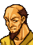
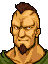

Armory / Item shop
At an armory

ここは武器屋だぜ
いろいろ売り買いしてくれよ
→買う 売る
At an item shop
ここは道具屋だぜ
いろいろ売り買いしてくれよ
→買う 売る
☆ Start of menu
If 「買う」 (Buy) or 「売る」 (Sell) is chosen
If 「買う」 (Buy) is chosen
どれがほしいんだい
☆ Start of buying
(To the product selection screen)
If a product is selected
If you have enough gold
If there is room in the inventory
その品物でいいのかい
→はい いいえ
If 「はい」 (Yes) is chosen
(Product is bought)
If 「いいえ」 (No) is chosen or cancelled with the B button
(The purchase is cancelled)
If the inventory is full
手持ちがいっぱいみたいだな
これ以上買い物はできねぇぜ
If you don't have enough gold
お金が足りねぇぜ
ほかに欲しい物はあるかい
(Return to ☆ start of buying)
If cancelled with the B button
If 「売る」 (Sell) is chosen
If the unit has at least one item
どの持ち物を売るんだ
☆ Start of selling
(To the item selection screen)
If an item is selected
If the item can be sold
それでいいのかい
→はい いいえ
If 「はい」 (Yes) is chosen
(Item is sold)
If 「いいえ」 (No) is chosen or cancelled with the B button
(The sale is cancelled)
If the item cannot be sold
その品物は買い取りできねぇな
Only if the unit still has at least one item
他にも売るのか
(Return to ☆ start of selling)
If cancelled with the B button
If the unit has no items
売るものがねぇじゃないか
ほかにも用があるのか
→買う 売る
(Return to ☆ start of menu)
If cancelled with the B button
ありがとよ またきてくれ
Arena

ここは闘技場だ▼
かけ金は○○○○ゴールドだ
やってみるかい？
→はい いいえ
If 「はい」 (Yes) is chosen
If you have enough gold
勝負はケリがつくまで続くが
降参したかったらＢボタンで
やめることもできるぜ▼
まあ 死なない程度に
がんばりなよ▼
(To the battle scene)
If you cancel mid-match with the B button
なんだ 降参かい
じゃあ かけ金はもらっとくぜ
またきなよ▼
If you win the match
ちっ 勝ちやがったか
賞金の○○○○ゴールドだ
じゃあな あばよ▼
If you lose the match
あーあ 死んじまって
ばかなやつだ▼
If the match is undecided by round 13
決着つかなかったみたいだな
かけ金はかえしとくぜ
じゃあな あばよ▼
If you don't have enough gold
金がたりないぜ
でなおしてきな▼
If 「いいえ」 (No) is chosen or cancelled with the B button
なんだ ひやかしかい
じゃまだ あっちへいきな▼